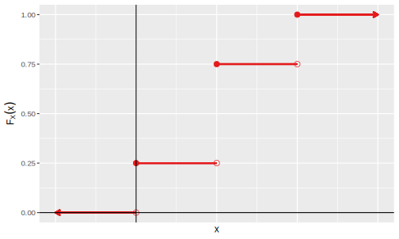
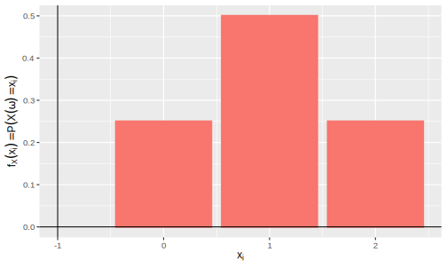

| Abbreviation | Expanded |
|---|---|
| probability density function | |
| cdf | cumulative distribution function |
| rv | random variable |
| iid | independent and identically distributed |
| obs | observations |
| CI | confidence interval |
| df | degrees of freedom |
Preliminaries
This section contains a list of abbreviations, comment on notation, and a (very quick) review of probability.
Abbreviations
In Table 1 we list abbreviations used throughout these lecture notes. These abbreviations are pretty standdard and you might encounter them outside the module in other references.
Notation
Uppercase roman letters, e.g., X, will typically denote random variables (rvs); lower case letters, e.g., x, will represent a particular value (observation) of a rv. Rvs have probability distributions. Distributions are typically characterised by parameters that describe population characteristics. In the present module, we will adopt the (frequentists) view that parameters are fixed real numbers that are often unknown and must be estimated from data. Statistical inference is a tool that will help us to do this.
Variables and parameters
Statistical models comprise both rvs and parameters. Be careful not to confuse them!
For a random variable X that has a distribution F depending on a set of parameters \Theta, we will write X \sim F(\Theta).
Specifying a probability distribution
We write X \sim F(\Theta) to indicate X has distribution function F(\Theta). This is not read as “X is approximately F(\Theta)”!
Sample space, events, probabilities
A sample space \Omega is a set of possible outcomes of an experiment. Points \omega \in \Omega are sample outcomes or realizations. Subsets A \subset \Omega are called events.
Example 1 (Sample space) Consider an experiment where we measure the petal widths from a randomly sampled cyclamen flowers. Before we observe the petal width, there is uncertainty that we can model using a sample space of events. The sample space is \Omega = (0, \infty), since measurements of length should be positive (practically, the lengths will have a finite size, too). Each \omega \in \Omega is a measurement of petal width for a cyclamen flower. Consider an event A = (5, 12]; this is the event that the petal width is larger than 5 but less than or equal to 12. Remember, we use probability to model uncertainty before we observe the petal width — after we take a measurement, the petal width is no longer uncertain (we have collected a statistic).
As sample spaces and events are described using sets, we recall the following notations, definitions, and laws about set theory. Let A, B, and A_1, A_2, \dots be events in a sample space \Omega.
complement: A^c = \{ \omega \in \Omega: \omega \notin A\}.
null event: \emptyset = \Omega^c.
intersection: A \cap B = \{\omega \in \Omega : \omega \in A \text{ and } \omega \in B\}. In particular, for A_1, A_2, \dots, then \bigcap_{i=1}^\infty A_i = \{\omega \in \Omega : \omega \in A_i \text{ for all } i \}\,.
difference: A \setminus B = \{\omega \in \Omega : \omega \in A, \omega \notin B\}.
size: |A| denotes the number of elements in A.
disjoint: A_i \cap A_j = \emptyset, for i\neq j.
partition: disjoint A_1, A_2, \dots such that \bigcup_{i=1}^\infty A_i = \Omega.
indicator: I_A(\omega) = I(\omega \in A) = \{1 \text{ if } \omega \in A; 0 \text{ if } \omega \notin A\}.
monotone increasing: A_1 \subset A_2 \subset \dots and define limit \lim_{n \to \infty}A_n = \bigcup_{i=1}^\infty A_i\,.
monotone decreasing: A_1 \supset A_2 \supset \dots and define limit \lim_{n \to \infty} A_n = \bigcap_{i=1}^\infty A_i\,.
distributive laws: A\cap (B\cup C) = (A\cap B) \cup (A \cap C)\,, A\cup(B\cap C) = (A \cup B) \cap (A\cup C)\,.
De Morgan’s laws: (A \cap B)^c = A^c \cup B^c\,, (A\cup B)^c = A^c \cap B^c\,.
We assign probabilities to events in our sample space.
Definition 1 (Probability distribution) A probability distribution is a function P : \Omega \to \mathbf{R} satisfying three axioms:
- P(A) \geq 0 for every A \subset \Omega (positivity),
- P(\Omega) = 1 (totality),
- if A_1, A_2, \dots are disjoint subsets of \Omega, then P(\cup_{i=1}^\infty A_i) = \sum_{i=1}^\infty P(A_i)\,.
Perspectives
We can interpret P(A) as representing:
- frequency, i.e., the long-run proportion of times A is true (the frequentist perspective),
- degrees of belief, i.e, as a measure of the observer’s strength of belief that A is true (the Bayesian perspective).
Theorem 1 (PIE) The principal of inclusion-exclusion, P(A\cup B) = P(A) + P(B) - P(A\cap B)\,.
Theorem 1 follows from the definition of a probability distributions and facts about set theory.
Definition 2 (Probability of an event) For events A from finite sample spaces \Omega, we assign probabilities according to: P(A) = \frac{|A|}{|\Omega|} \,.
For finite sample spaces, we assign probabilities according to their long-run frequency of occurring. For an event A, this is the ratio of the size of A (number of ways A can happen) to the size of \Omega (number of total outcomes).
Definition 3 (Independent events) Events A and B are independent, i.e., A \perp \!\!\! \perp B, iff P(A\cap B) = P(A)P(B).
That is, events A and B are independent if and only if the probability of A and B occurring is equal to the the probability A occurring times the probability of B occurring.
Definition 4 (Conditional probability) If P(B) > 0, then P(A \mid B) = \frac{P(A \cap B)}{P(B)}\,.
Note that:
- P(\cdot \mid B) satisfies the axioms of probability, for fixed B,
- in general, P(A \mid \cdot) is not a probability for fixed A, and,
- in general, P(A\mid B) \neq P(B \mid A).
Theorem 2 (Bayes Theorem) Let events A_1, \dots, A_k partition \Omega, with P(A_i) > 0.
If P(B) > 0, then P(A_i \mid B) = \frac{P(B\mid A_i) P(A_i)}{\sum_j P(B \mid A_j) P(A_j)}\,.
Generally, it is not feasible to assign probabilities to all subsets of \Omega (e.g., if is infinite). In that case, we restrict to our attention to a \sigma-algebra \mathcal{A} (also called, \sigma-field), which is a collection of sets satisfying:
- \emptyset \in \mathcal{A},
- if A_1, A_2, \dots, \in \mathcal{A} then \cup_{i = 1}^\infty A_i \in \mathcal{A}, 3.A\in \mathcal{A} \implies A^c \in \mathcal{A}.
Sets in \mathcal{A} are said to be measurable and (\Omega, \mathcal{A}) is a measure space. If P is a probability defined on \mathcal{A}, then (\Omega, \mathcal{A}, P) is called a probability space.
E.g., when \Omega \equiv \mathbf{R}, we take \mathcal{A} to be the smallest \sigma-field containing all open subsets of \mathbf{R}, which is called the Borel \sigma-field. If you find these details interesting, take: MA42008 Mathematical Statistics!
Random variables
How do we link sample spaces and events to data?
We use random variables to link sample spaces and events to data.
Definition 5 (Random variables) A random variable (rv) is a mapping X : \Omega \to \mathbf{R} that maps \omega \in \Omega \mapsto X(\omega).
Example 2 Consider a coin flipping experiment where you flip a fair coin eight times. Let X be the number of heads in the sequence. If three heads occur, e.g., \omega = HTTTTTHH, then X(\omega) = 3.
Example 3 Consider an experiment where you draw a point a random from the unit disk. Then \Omega = \{(x,y) : x^2 + y^2 \leq 1\} and a typical outcome will be the pair \omega = (x,y). Some random variables to consider are X(\omega) = x, Y(\omega) = y, Z(\omega) = x+y, and W(\omega) = \sqrt{x^2 + y^2}.
Definition 6 (Assigning probabilities to rvs) Given X and A \subset \mathbf{R}, we define X^{-1}(A) = \{\omega \in \Omega : X(\omega) \in A\} and let P(X \in A) = P(X^{-1}(A)) = P(\{\omega \in \Omega : X(\omega) \in A\})\,, e.g., P(X=x) = P(X^{-1}(x)) = P(\{\omega \in \Omega : X(\omega) = x\}).
Observations vs rvs
X denotes a rv and x denotes a particular value of X.
We measure probabilities of events
A rv X by itself is not an event. You would never write P(X), would you!?
Example 4 Consider a coin flipping experiment where you flip a fair coin twice. Let X be the number of heads. Then P(X=0) = P(\{TT\}) = \frac{1}{4}\,, P(X=1) = P(\{HT\} \cup \{TH\}) = P(\{HT\}) + P(\{TH\}) = \frac{1}{2}\,, P(X=2) = P(\{HH\}) = \frac{1}{4}\,.
Definition 7 (Cdf) The cumulative distribution function (cdf), F_X:\mathbf{R} \to [0,1], is defined by F_X(x) = P(X \leq x).
Figure 1 displays the cdf for the coin flip experiment considered in Example 4. The cdf F_X(x) jumps at x = 0, x=1, and x=2. The height of the jumps are given by P(X=x). We observe as well that F_X(x) = 0 for x<0, as no probability has been accumulated; recall that probabilities are always non-negative, so a function that accumulates probability will always be non-negative. Further, F_X(x) = 1 for x \geq 2, as all the probability has been accumulated; remember that the total probability that can be assigned over the whole sample space must sum to one.

Note that a cdf completely determines the distribution of a random variable. This statement is captured in Theorem 3.
Theorem 3 Let X have cdf F and Y have cdf G. If F(x) = G(x) for all x, then P(X \in A)= P(Y \in A) \forall A \in \mathbf{R}.
Since cdfs determine or characterize a probability distribution, it is useful to know the key properties of cdfs, which are listed below in Theorem 4.
Theorem 4 (Properties of cdfs) F : \mathbf{R} \to [0,1] is a cdf for some P iff,
- F is nondecreasing (i.e., x_1 < x_2 \implies F(x_1) \leq F(x_2)),
- F is normalized to [0,1] (i.e., \lim_{x \to -\infty} F(x) = 0 and \lim_{x \to \infty} F(x) = 1),
- F is right-continuous (i.e., F(x) = F(x^*) \forall x where F(x^*) = \lim_{y > x; y \to x} F(y)).
For a rv X we say X is discrete if it assumes at most a countable number of (discrete) values. For a discrete sample space, the collection of all probabilities of X(\omega) gives us a probability distribution.
Definition 8 (Pmf) A pdf for a discrete rv X is f_X(x) = P(X = x). Since this density function places a “point mass” at each x, it is sometimes referred to as a probability mass function (pmf).
Figure 2 displays the pmf for the coin flip experiment considered in Example 4. The pmf is a histogram with point masses at x = 0, x=1, and x=2. The mass placed at these points is given by P(X = x). Since the pmf is a pdf for a discrete random variable, recall from the axioms of probability that the pmf therefore satisfies f(x) \geq 0, \forall x \in \mathbf{R}, and \sum_i f(x_i) = 1. This fact can be observed in Figure 2: f_X(0) + f_X(1) + f_X(2) = 0.25 + 0.5 + 0.25 = 1.

A rv X is continuous if there exists a continuous function f_X such that,
- f_X(x) \geq 0 \forall x,
- \int_{-\infty}^\infty f_X(x) dx = 1 and
- P(a < X < b) = \int_a^b f_X(x) dx, for a\leq b.
Definition 9 (Pdf) A f_X satisfying the three properties above is a pdf for the continous rv X.
Events of probability zero
If X is continuous, then P(X = x) = 0 for every x. That is, P(a \leq X \leq b) = P(a < X \leq b) = P(a \leq X < b) = P(a < X < b),.
The cdf is related to the pdf by the derivative (difference). If X is continuous: F_X(x) = P(X \leq x) = \int_{-\infty}^x f_X(t) dt and f_X(x) = F_X^\prime(x) at all x at which F_X is differentiable. (Likewise, if X is discrete, then we replace the integral with a sum F_X(x) = P(X \leq x) = \sum_{x_i \leq x} f_X(x_i).)
Definition 10 (Quantile function) Let X be a rv with cdf F. The inverse cdf, or quantile function, is defined by F^{-1}(q) = \inf \{x : F(x) > q\} for q \in [0,1]. If F is monotonic increasing and continuous then F^{-1}(q) is the unique real number x such that F(x) = q.
Some quantiles get used more than others (and therefore get names). Important quantiles include, F^{-1}(\frac{1}{4}) is the first quantile, F^{-1}(\frac{1}{2}) is the median, and F^{-1}(\frac{3}{4}) is the third quantile.
Definition 11 (Equality in distribution) We say X and Y are equal in distribution, X \equiv Y, if F_X(x) = F_Y(x) for all x.
Equality in distribution versus equality of rvs
Note that equality in distribution does not mean that the random variables are the same. Rather, probability statements are the same.
Consider the following example. Suppose P(X = 1) = P(X = -1) = \frac{1}{2}\,. Let Y = -X. Then P(Y = 1) = P(Y = -1) = \frac{1}{2}\,. Thus, X \equiv Y \,, but X and Y are not equal! In fact, P(X = Y) = 0.
We sometimes consider more than one random variable, taken to together. This leads to the concept of a joint and marginal densities.
Definition 12 (Joint pdf) A joint pdf for (X,Y) satisfies
- f(x,y) \geq 0 \forall x,y,
- \iint_{-\infty}^\infty f(x,y) dx dy = 1,
- for A \in \mathbf{R}\times \mathbf{R}, P((X,Y) \in A) = \iint_A f(x,y) dx dy.
Definition 13 (Joint cdf) A joint cdf is given by F(x,y) = P(X\leq x, Y\leq y).
Definition 14 (marginal pdf) For X,Y with joint pdf f(x,y), we define the marginals for X and Y as f_X(x) \int f(x,y) dy and f_Y(y) = \int f(x,y) dx, respectively.
We also have a notion of independence for two rvs.
Definition 15 (Independence of rvs) Rvs X and Y are independent if P(X \in A, Y \in B) = P(X \in A) P(Y \in B).
Theorem 5 Let X,Y have joint f_{XY}. Then X and Y are independent iff f_{XY} = f_X \cdot f_Y for all x,y.
If X_1, \dots X_n are independent and each as the same marginal distribution with cdf F, we say X_1, \dots, X_n are iid and write X_1, \dots, X_n \sim F iid. We also write X_1, \dots, X_n \sim f if F has corresponding density f, when no confusion arises. We will often consider collections of iid random variables.
Definition 16 (Random sample) X_1, \dots, X_n \sim F iid is a random sample of size n from a distribution F.
We also consider the expected value of a rv.
Definition 17 (Expectation) For a discrete rv X with possible outcomes x_1, x_2, \dots and corresponding probabilities p_1, p_2, \dots, the expectation is defined by \mathbf{E}[X] = \sum_{i=1}^\infty x_i p_i\,.
For a continuous rv X with pdf f, the expectation is defined by \mathbf{E}[X] = \int_{-\infty}^{\infty} x f(x) dx\,.
For both discrete and continuous rvs, we refer to various statistics relating to expected values as moments of the distribution.
Definition 18 (n-th raw moment) For a rv X, the n-th raw moment is given by \mathbf{E}[X^n].
Definition 19 (n-th central moment) For a rv X with \mu = \mathbf{E}[X], the n-th central moment is defined as \mathbf{E}[(X-\mu)^n].
The mean of a distribution is the first raw moment. The variance of a distribution is the second central moment. Quantities related to higher order central moments are also of interest; Table 2 lists some of these with associated “names” that you might encounter. Variance is a measure of dispersion about the mean. Skewness is a measure of the lopsidedness of a distribution. If a distribution is symmetric (and its third central moment is defined) then it will have skewness equal to zero. A distribution that is skewed to the left (i.e., the tail of the distribution is longer on the left) will have negative skewness and a distribution that is skewed to the right (i.e., the tail of the distribution is longer on the right) will have positive skewness. Kurtosis is a measure of how “fat” or “heavy” the tails of a distribution are; distributions with heavy tails will have high kurtosis values. Since variance and kurtosis are related to the even-powered central moments, they will always be non-negative.
| Expression | Name |
|---|---|
| \mathbf{E}[X] | mean |
| \mathbf{E}[X^2] | — |
| \mathbf{E}[X^3] | — |
| \mathbf{E}[X^4] | — |
| Expression | Name |
|---|---|
| \mathbf{E}[(X - \mu)] | — |
| \mathbf{E}[(X - \mu)^2] | variance |
| \mathbf{E}[(X - \mu)^3 / \sigma^3] | (Fisher’s) skewness |
| \mathbf{E}[(X - \mu)^4 / \sigma^4] | kurtosis |
Its all Greek … when it comes to kurtosis
The root of kurtosis comes from the Greek word for “bulging” or “convex”. You may see a heavy-tailed or high kurtosis distributions described as leptokurtic (“narrow” + “bulging”) and a light-tailed or low kurtosis distributions described as platykurtic (“broad” or “flat” + “bulging”). The “high” and “low” qualifications are made in relation to the tails of the normal distribution; a distribution having the same kurtosis as the normal distribution can be described as mesokurtic (“middle” + “bulging”).